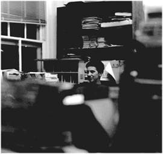

|
 |
"So it's been necessary for me to... get a balance between fun and kicking ass and taking on the future and that sort of thing..." |
|
My major is art history. It's probably going to be art history and art
and possibly a markets and management certificate, which is basically what I
planned to do all along because I was interested in arts management and I
was interested in graphic design. I don't have any idea what I want to do
after school. I’ve worked for Kathy Silbiger since I was a freshman. I did
office tasks and posting flyers my freshman year. And then my sophomore
year, I did - I worked in the Bivins Gallery, running/working on that place
and writing OnTap! for the newspaper and house managing and doing box
office shows...I’ve done that this year as well, but it's kind of been relegated
to a background position. Like I run the gallery, but it doesn't take up a
whole lot of my time.
All through high school, I felt like I had all these friends and there were those of them that didn’t have the same music interests as me and then there were those that really were able to introduce me to stuff that I thought was interesting. I was afraid, coming to college, you know that first semester freshman year you don't meet anyone that you like or you’re going to hang out with, so I was thinking "Hmm, okay, music is something that when I hear music I really like, I love it and it makes a difference in my life and so I need to find someone who can do that, bring that to me." Then when I saw the thing in the paper to be a DJ I thought "How great. I can take matters into my own hands." So I just did it that way. My first semester freshman year I saw an ad in the paper and I trained. Kristen [future general manager] was in my dance class and she got me a 2-5...They didn't know me from a hole in the ground, cause I was kind of scared of everyone in my training group. 2-5 in the morning on Wednesday. It was fun though, and it wasn't hard at all. Cause that semester of my freshman year, I could stay up all night and do all kinds of stuff. And I loved it. I was kind of not sure what to make of it at all. I wasn't sure what to make of much at that point. Cause you know, it was definitely like a whole scene...and I was like, "Oh my god, I don’t know that much about music. What am I doing here?"...It was that kind of thing. I played a lot of shit that I had heard before, things that I thought were my more progressive listening end, which were probably at that time My Bloody Valentine and things like that....But I really got a really fast distaste for rock because you could never depend on it...You never know with rock, kind of. It's hard to pick out rock. Like if you were going to play a Pavement song, and you'd never heard it before but you wanted to play a song from it, you'd be like how do I go about choosing a song? I don't spend any money on CDs and that was probably another thing that led me to the station. I’ve been through every kind of phase that I could possibly go through to the point that now I don't like much of anything. I see music as more like a thing, the way people who get really into literary criticism view theory and they read people's works and it's all about interpretation and it's not like being at the work. Like I don't listen to the music expecting myself to be really blown away. Friends that I have that don't know anything about XDU, people I consider 'normal,' that haven't been in this music world, they listen to Bob Marley and they groove on it and think it's really great. They just sit back and say "Wow, we love this." I don't listen to music now expecting to find music that hits me that way. You know, I sort of expect it to do something different. Like I expect to think about it in terms of all the stuff I know about music and fit it in and see if its progressive. I expect to learn history and learn its instrumentation, and a million things besides just like being blown away, which is the way I felt about my Bloody Valentine when I first got into the station. It's a totally different interaction with music that makes it more like phase-oriented because I want to know about it and learn about it and be on top of it. XDU night at the Hideaway would never work. It kind of serves to give Duke a little diversity. I think it makes Duke comfortable for a group of students that would be really unsatisfied here otherwise. Not to say that XDU is like the saving grace for some people who are outcasts, but you know? I think that the way it operates and the fact that it operates in that way says "Hey, alternatives are just as good as things that are mainstream" They operate the same way basically, they're just representing the interests of a different group of people, a different kind of interest. So I don't really worry about the way it fits into the Duke community and I feel that it's rare and misguided that someone would see it as problematic as a piece of the community. Even as general manager I wasn't threatened about what people might say about XDU because I’m just sort of like, if what you think about XDU is in some way incongruent or would be seen as a threat, then it's something we can deal with if I just sit down and straighten you out! It's so dependent on the community members. I mean, the people that are there really recognize the community members as contributing a large portion of the managerial - the things that make it run - the keeping somebody on the air stuff. I think the community members get the kind of feeling from Duke that we're a part of this and we're putting in the effort and we're getting the respect back for it, which they don't get from a lot of other things because the whole Duke/Durham thing, Duke is kind of insulated. I don't feel that there's a chance for community members to contribute on such an equal level at a lot of other places. And I don't feel like we make distinctions...It's a good experience for me to be around people that aren't my own age and don’t do my same thing when they go home in the afternoon. It releases me from the whole student thing...cause everyone does different things. So you can just bring what you bring there and you don’t worry about all the other stuff. |
The music staff - they know a ton about music, they're really into it...I
don’t think students would have as much dedication...cause for these people,
you know, they have their jobs and such and they have their
extracurriculars. If XDU is one of them, they’re looking at it in a whole
different way than a student who's like okay, well my primary thing that I’m
here for is school, and then I do these things that are like sort of half
responsibilities and half enjoyments...but the community members, it's like
an honest to god thing that they love, it relaxes them. they go there for social
interaction, they go there for sort of a learning experience, to be around the
music, they go there just for the fun of being on the air...obviously there's
always the DJ who just really doesn't want to do anything or learn anything.
There's both students and community members like that.
This year we've had so many parties and so many concerts, so it feels
like there’s all this opportunity to get to know people and hang out with
people and I don't remember that being there before, but that could've been
just because I wasn’t involved. so yeah, i do feel like there's definately a
communtiy, but you definitely have to want to get in it to get in it. but a lot of
people do i think and i think it still has the potential to expand. but it means
putting in more time at the station, basically, and so if you don't want to
commit more time at the station then you're not going to be able to feel the
communtiy of it.
I love [college radio], I think it's great. What does it mean? I don’t know. I don't think it really means anything. I think it's important to music and allowing new styles of music to emerge into popular culture, because I don't think it would. I think its important to the musicians I guess. And it's important to the DJs, just cause it's fun for them, basically...I don't know if they would say the main motivation is for fun, or what. But I would hope so...because it's supposed to be. I love XDU and it's awesome and it's taught me a lot and I’m not like a music guru at all, so to me probably the most interesting thing about XDU is like the management structure and the fact that it works. It's interesting to me that it's so laid back...We give all these people cards and they have 24 hours access to this place with a shitload of stuff...although they come up there with their little high school friends and roll joint or whatever, at the same time they do take care of it, they do respect what they do there. It comes from them mostly, cause I don't really think it comes from us...They respect it...I don't worry about people fucking the place up basically, which is amazing, because there's no constraint on anybody... It's totally unique in every way. Every part of it is really great. There were days where we thought [the tower] was going to go up and then it would turn out that it was going to be a month beyond that. And then the second time that happened I think people were basically, “Why do we do this anymore?" You know, the funny thing is...I never really felt like it mattered to me at all. Like I’ve never really thought about the tower, I didn't think about who was out here. I don't think I would have been really comforted by the it one way or another, to think that people were listening or to think that nobody was listening. I don't think it mattered to me at all. It was just like going in there and doing that. With the whole crisis of the tower thing, all the sudden people came to this new awareness that it did matter. And it can really be used to our advantage that now people are in this sort of like state where they're like...my show doesn't matter if there are no people out there listening. Which could be used for us to say "Now people are listening and your show matters. How are you going to make it better? How are you going to make it really worthy of the people that are listening?" So I do think it could be used, but I also think it's put people into this crisis of this new dimension that is probably going to stay with the station. And it could stay with it in a bad way and it could stay with it in a good way too...I hope people aren't too deeply rooted in this whole "There's no point anymore." Cause what if we were this little pirate radio station, would there be a point at all? If we couldn’t afford a $70,000 tower and antenna, would there be no point? I don't think so. I mean, it would be harder, I don't think we'd have the kind of staff that we have, that's as committed. [Being general manager] was kind of weird...It was my first major management experience and it was sort of like, what am I supposed to do? Envision my ideals of this place and impose them on people? I remember Kristen telling me in the whole transition process not to clean the office because people were really comfortable with the way it's just crowded and cluttered and looks like shit. She's like, “You know you’re going to want to get in their and innovate because it's just the notion of being a new manager but then you have to think like, what are the things here that are worth changing... and some of them really aren’t” That’s true and that's not true in other organizations. Necessary? I could say something about it's necessary for the music to get out there or whatever. But I guess I would say that it was necessary for me personally...sort of the whole vision that life is a dream and it's just me that's really here and everyone else is just a figment of my imagination...I think it's been necessary in sort of growing me up...I feel like I just approach things with like an immature attitude sometimes. So it's been necessary for me to give me a really good place with some good friends to sort of get a balance between fun and kicking ass and taking on the future and that sort of thing...It's really comforting that you can go to a party and get really fucked up with all the same people that you work with. And just be like "Okay well this is another side of my personality." I think that I've had a really hard time assimilating that a person can be a person that...kicks ass and does a lot of stuff and still has a loose side, which is what I see is representative of another personality...So it's been comforting to me that i can have that aspect of my personality and it doesn't mean that my life is headed down the drain, you know? It means you can still have fun and get shit done too. That's probably why it's been necessary for me. Like in more the human dynamic than in the music. The music I've let go of..I hate it now really. I just don't want to be involved in it.. it can't excite me. I've just run my course...which is weird, because I still really like music, but other things have sort of like taken over. |